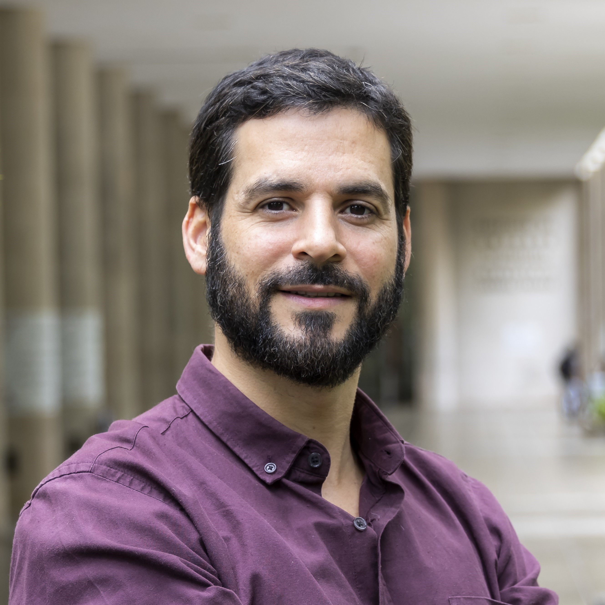

Keynote

Marcos Kalinowski
PUC-Rio, Brazil
Rethinking Software Maintenance in the Age of AI
Generative AI is rapidly moving Software Engineering from coding assistance toward agents capable of understanding repositories, planning changes, modifying artifacts, and verifying solutions. This shift invites us to rethink what software maintenance means when changes are increasingly performed through human–AI collaboration and autonomous agents. In particular, we discuss a triad of debts that is relevant in this new landscape: Technical Debt, related to the quality and sustainability of software artifacts; Cognitive Debt, associated with the loss or insufficiency of human understanding of systems increasingly modified with AI support; and Intent Debt, arising from the difficulty of preserving and recovering the motivations, decisions, constraints, and goals behind those changes. The keynote also discusses context as a new maintenance artifact and presents challenges for the effective and safe evolution of software through human-AI collaboration and increasingly autonomous agents.
About the Speaker
Marcos Kalinowski is a Professor of Software Engineering at PUC-Rio, Brazil, where he leads the Software & AI Engineering Lab (SAIL), supervises doctoral research, and conducts R&D projects in collaboration with industry partners. His research focuses on AI Engineering, AI-Augmented Software Engineering, Empirical Software Engineering, and Human Aspects of Software Engineering, resulting in industry-adopted solutions, patents, and more than 200 scientific articles, mostly published in top-tier venues. This body of work has achieved significant international visibility, positioning him as the most cited software engineering scientist in Latin America in 2024, 2025, and 2026. Throughout his career he received over 20 distinguished paper awards, including ACM Distinguished Paper Awards at ICSE, CAIN, and CHASE. He holds a research productivity fellowship from the Brazilian Research Council (CNPq), a "Scientist of the State" distinction from the Rio de Janeiro state (FAPERJ), and is a fellow of the Kunumi Institute. Marcos has held several prominent leadership roles in the international software engineering research community, including the roles of PC chair of ESEM, Chair of the ISERN, and General Chair of ICSE. He serves the research community as an Associate Editor of IEEE Software, IEEE Transactions on Software Engineering, Empirical Software Engineering, and the Journal of Systems and Software. He is an active member of ACM, IEEE, ISERN, and the Brazilian Computer Society.